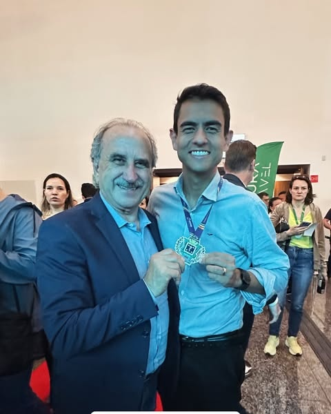

Assistência Social
Fiscalização e defesa das políticas de assistência, do berçário à terceira idade.
Servidor público há 18 anos, ex-Secretário de Assistência Social. Agora, vereador pelo povo de Cascavel.
Hudson Moreschi é engenheiro de Produção Agroindustrial e servidor público municipal há 18 anos, com atuação na política de Assistência Social.
De 2017 a 2024, foi secretário municipal de Assistência Social de Cascavel. Hoje, exerce mandato como vereador na 18ª Legislatura (2025–2028).
Consultar perfil oficial na CâmaraDo trabalho diante do notebook a um registro pessoal em que Hudson aparece usando uma medalha.

Fiscalização e defesa das políticas de assistência, do berçário à terceira idade.
Infraestrutura, mobilidade e planejamento para Cascavel.
Apoio a programas e projetos que fortalecem as famílias.
Contribuição técnica ao setor regional, ligada à formação de Hudson em Produção Agroindustrial.
Defesa dos servidores municipais, área em que Hudson também tem experiência profissional.
Escuta de bairros, entidades, comércio e moradores pelo gabinete.
Uma seleção de propostas e ações relevantes. Cada card mostra o tema, um resumo e o status confirmado; os espaços de imagem ficam prontos para você escolher as fotos depois.
A lei criou o mês de conscientização e prevenção ao uso de drogas. Em parceria com Everton Guimarães, a campanha Vape Zero chegou a 23 escolas estaduais de Ensino Médio em 2025.
Institui uma política municipal de acolhimento a vítimas de acidentes e familiares, com articulação entre saúde, assistência social, segurança e mobilidade. A implementação dos serviços não foi verificada.
Institui a programação anual para valorizar o setor industrial de Cascavel. A abertura de 2026 reuniu representantes da indústria e entidades locais na ACIC.
Propõe ações municipais para fortalecer vínculos familiares, incentivar práticas educativas sem violência e apoiar o desenvolvimento integral de crianças de 0 a 12 anos.
Propõe um selo municipal para reconhecer empresas que adotem ações de promoção da saúde mental e do bem-estar de seus trabalhadores.
Consulte os canais oficiais para ver a atividade parlamentar e as atualizações do gabinete.
Envie uma sugestão, dúvida ou demanda do seu bairro pelos canais de atendimento.